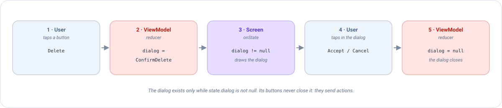

Compose dialogs¶
A dialog is a small window that appears over the screen to tell something to the user or to ask a question: "Delete this note?", "The connection failed", "Discard your changes?". This page explains how to show one with Emanate, step by step, with a complete example you can copy.
The idea in one minute¶
In Emanate a dialog is not something you open: it is something the state says. There is no dialog.show() and
no dialog.dismiss(). Instead:
- The state has a field that says which dialog is open, or
nullif there is none. - The screen draws the dialog while that field is not
null. - The buttons of the dialog don't close it. They send an action, and the ViewModel changes the field.

If you already know state, actions and reducers, there is nothing new here: a dialog is one more piece of the state.
Why do it this way?
- It survives a rotation. The state is kept by the ViewModel, so the dialog is still there after the screen
is recreated. A dialog opened with
show()disappears. - The ViewModel knows what is on screen. It can decide things like "ignore this tap while a dialog is open".
- You can test it without a device. The whole flow is state and actions: see Testing.
Example: confirm before deleting a note¶
We are going to build a screen with a Delete button. When the user presses it, a dialog asks for confirmation.
Step 1: describe the dialogs in the state¶
Create a type that lists every dialog the screen can show. A sealed interface is perfect: each dialog is one
case, and the compiler will warn you if you forget to draw one.
sealed interface NoteDialog {
data object ConfirmDelete : NoteDialog
}
data class NoteState(
val title: String,
val dialog: NoteDialog? // null = no dialog open
) : EmaState {
companion object {
val DEFAULT = NoteState(title = "", dialog = null)
}
}
dialog is nullable on purpose: null means "nothing is open".
Step 2: describe what the user can do¶
Every button of the screen and of the dialog is an action:
sealed interface NoteAction : EmaAction {
data object DeleteClicked : NoteAction // the Delete button of the screen
data object DeleteConfirmed : NoteAction // "Accept" in the dialog
data object DeleteCancelled : NoteAction // "Cancel" in the dialog, or back, or tapping outside
}
sealed interface NoteEvent : EmaEvent {
data object NoteDeleted : NoteEvent
}
Step 3: the ViewModel opens and closes the dialog¶
Opening a dialog is writing it in the state. Closing it is writing null:
class NoteViewModel(private val deleteNote: DeleteNoteUseCase) :
EmaViewModel<NoteState, NoteAction, NoteEvent>(NoteState.DEFAULT) {
override fun setup() = source {
reducers {
add<NoteAction> { action ->
when (action) {
is NoteAction.DeleteClicked -> state.copy(dialog = NoteDialog.ConfirmDelete) // open
is NoteAction.DeleteCancelled -> state.copy(dialog = null) // close
is NoteAction.DeleteConfirmed -> state.copy(dialog = null) // close
}
}
}
sideEffects {
// The work is done after confirming: the dialog is already closed
add<NoteAction.DeleteConfirmed> {
deleteNote(Unit)
publish(NoteEvent.NoteDeleted)
}
}
}
}
Notice that confirming does two things, and each one lives where it belongs: the reducer closes the dialog (it is state) and the side effect deletes the note (it is work). See reducers and side effects if you need a reminder.
Step 4: the screen draws the dialog¶
In onState, check the field. If there is a dialog, emit the composable that draws it. Here we use the
AlertDialog of Material 3, the standard dialog of Compose:
@Composable
override fun onState(state: NoteState, actions: EmaActionDispatcher<NoteAction>) {
Column {
Text(state.title)
Button(onClick = { actions.dispatch(NoteAction.DeleteClicked) }) {
Text("Delete")
}
}
// The dialog is drawn only while the state says so
when (state.dialog) {
NoteDialog.ConfirmDelete -> AlertDialog(
onDismissRequest = { actions.dispatch(NoteAction.DeleteCancelled) }, // back or tap outside
title = { Text("Delete note") },
text = { Text("This cannot be undone. Do you want to continue?") },
confirmButton = {
TextButton(onClick = { actions.dispatch(NoteAction.DeleteConfirmed) }) { Text("Delete") }
},
dismissButton = {
TextButton(onClick = { actions.dispatch(NoteAction.DeleteCancelled) }) { Text("Cancel") }
}
)
null -> Unit // nothing to draw
}
}
That is the whole feature. Let's follow what happens when the user presses Delete:
| # | What happens | Who |
|---|---|---|
| 1 | The user presses the button. The screen sends DeleteClicked. |
Screen |
| 2 | The reducer returns state.copy(dialog = ConfirmDelete). |
ViewModel |
| 3 | The state changed, so onState runs again. Now state.dialog is not null, and the AlertDialog is drawn. |
Screen |
| 4 | The user presses Delete in the dialog. The screen sends DeleteConfirmed. |
Screen |
| 5 | The reducer returns dialog = null and the side effect deletes the note. onState runs again and the dialog is no longer drawn. |
ViewModel |
The most common mistake
The onDismissRequest of AlertDialog is called when the user presses back or taps outside the dialog. It does
not close it. If you leave it empty (onDismissRequest = {}), the dialog can never be dismissed that way, and
if you try to hide it with a local var, the state and the screen get out of sync. Always dispatch an
action that sets dialog = null.
Dialogs that carry data¶
A dialog often needs information: which note is going to be deleted? Use a data class instead of a data object
and put the data inside:
sealed interface NoteListDialog {
data class ConfirmDelete(val noteId: Int, val noteTitle: String) : NoteListDialog
data class Error(val message: EmaText) : NoteListDialog
}
// Reducer: the dialog is created with the data of the tapped note
is NoteListAction.DeleteClicked -> state.copy(
dialog = NoteListDialog.ConfirmDelete(action.note.id, action.note.title)
)
// Screen: each case of the sealed type is drawn differently
when (val dialog = state.dialog) {
is NoteListDialog.ConfirmDelete -> AlertDialog(
onDismissRequest = { actions.dispatch(NoteListAction.DialogDismissed) },
title = { Text("Delete \"${dialog.noteTitle}\"?") },
confirmButton = {
TextButton(onClick = { actions.dispatch(NoteListAction.DeleteConfirmed(dialog.noteId)) }) {
Text("Delete")
}
},
dismissButton = {
TextButton(onClick = { actions.dispatch(NoteListAction.DialogDismissed) }) { Text("Cancel") }
}
)
is NoteListDialog.Error -> AlertDialog(
onDismissRequest = { actions.dispatch(NoteListAction.DialogDismissed) },
text = { Text(dialog.message.stringResource()) },
confirmButton = {
TextButton(onClick = { actions.dispatch(NoteListAction.DialogDismissed) }) { Text("OK") }
}
)
null -> Unit
}
Because when over a sealed interface must be exhaustive, adding a new dialog to the type makes the compiler
point you to the place where you have to draw it.
Only one dialog at a time
A nullable field can hold a single dialog. That is almost always what you want, since two stacked dialogs are confusing. If you really need two at once, use two fields.
Avoid repeating yourself: a reusable dialog¶
When several dialogs look the same (a title, a message, Accept and Cancel), don't write the AlertDialog over
and over. Wrap it once in your own composable that receives the texts and two lambdas:
@Composable
fun ConfirmationDialog(
title: String,
message: String,
onConfirm: () -> Unit,
onCancel: () -> Unit
) {
AlertDialog(
onDismissRequest = onCancel,
title = { Text(title) },
text = { Text(message) },
confirmButton = { TextButton(onClick = onConfirm) { Text("Accept") } },
dismissButton = { TextButton(onClick = onCancel) { Text("Cancel") } }
)
}
// Use
NoteDialog.ConfirmDelete -> ConfirmationDialog(
title = "Delete note",
message = "This cannot be undone.",
onConfirm = { actions.dispatch(NoteAction.DeleteConfirmed) },
onCancel = { actions.dispatch(NoteAction.DeleteCancelled) }
)
The dialog and the back button¶
While a dialog is on screen, the dialog must handle the back button, not the screen behind it. Make onBack
return null when state.dialog is not null:
override fun onBack(state: NoteState): NoteAction? =
if (state.dialog == null) NoteAction.BackClicked else null
If you forget it, the screen intercepts back and the dialog does too, and the user may see two dialogs one over the other. The full explanation is in Back handling.
Loading: it is not always a dialog¶
A spinner is not necessarily a dialog. In most cases it is better to model it as a boolean of the state and draw a progress indicator where it belongs, for example inside the button that started the work:
data class LoginState(val isLoading: Boolean) : EmaState {
companion object {
val DEFAULT = LoginState(isLoading = false /* ... */)
}
}
// Reducer
is LoginAction.LoginClicked -> state.copy(isLoading = true)
is LoginAction.LoginFinished -> state.copy(isLoading = false)
Button(onClick = { actions.dispatch(LoginAction.LoginClicked) }, enabled = !state.isLoading) {
if (state.isLoading) CircularProgressIndicator(Modifier.size(18.dp)) else Text("Log in")
}
Use a blocking loading dialog only when the user must not touch anything while the work runs. Even then it is the
same pattern: isLoading in the state, and if (state.isLoading) LoadingDialog() in the screen.
Testing a dialog¶
Since the dialog is state and the choices are actions, you test the whole flow without drawing anything: dispatch the action, check the state.
@Test
fun `pressing delete asks for confirmation and confirming deletes the note`() = runTest {
val viewModel = NoteViewModel(FakeDeleteNoteUseCase())
val recorder = viewModel.record()
viewModel.dispatch(NoteAction.DeleteClicked)
recorder.assertState { it.dialog == NoteDialog.ConfirmDelete }
viewModel.dispatch(NoteAction.DeleteConfirmed)
advanceUntilIdle()
recorder.assertState { it.dialog == null }
recorder.assertEvents(NoteEvent.NoteDeleted)
}
See Testing for how to set up useTestConfiguration().